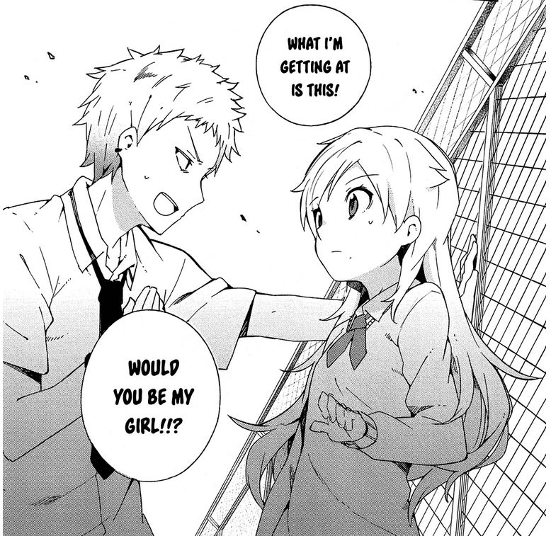

Yey, first review post! Be gentle, it's my first time doing anything like this. So, onto this review:
Ookami Shounen wa Kyou mo Uso o Kasaneru
The Boy Who Cried Wolf Tells Another Lie Today
So the manga begins with our protagonist Keitarou Itsuki, a student in junior high who has a menacing glare that he thinks is the reason for getting rejected mercilessly by the girl he likes, Aoi Tokujira.

So, to "help" him out in classic anime fashion, his expert crossdressing brother (who I totally thought was a girl until midway into the series because I wasn't paying attention :D) gives him a makeover as to give him the appearance of a girl so that he can stop feeling bad. Incidentally, he meets with and befriends Tokujira who, unrecognizingly, explains that she isn't cold-hearted, but actually just has a fear of men. And, given Itsuki's sense of masculinity, Tokujira asks for her(his) help to fight her androphobia by means of competitive staring contest, among other things.
But no seriously. Among side characters include Botan Kurashiki (best ship btw), Tokujira's protector-type childhood friend who suspects Itsuki of being a professional stalker (with good reason),

Cmon man, taking notes? Seriously? I don't blame her.
and Miyama, who unknowingly confesses to the very straight Itsuki.
This is what you get for professional stalking.
One thing I would've wanted to see more of is some backstory between Tokujira and her father, which is the main cause of her grief and androphobia. It seems as if he's just abusive for the convenience of the plot, but I guess it wouldn't fit into the overall fluffy style that the series is going for if it was to go too in depth into him. But it is a little awkward when the series concludes with "and that's how Tokujira overcame her androphobia.... but her father is still abusive lol cya". But I'll totally forgive it because I got the ship I wanted, which I totally wasn't expecting!
....I said, I got the ship I wante-
Crying won't change anything! >:C
...Anyway, here's some final review scores:
Plot - 3/5
Characters - 4/5
Art - 4/5
Comedy - 4/5
Fluff-o-meter - 5/5
Recommended read? Yes